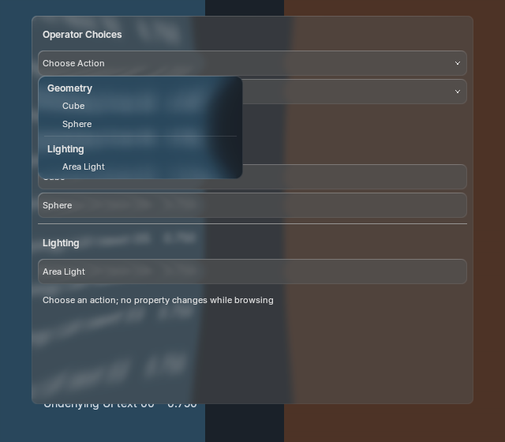
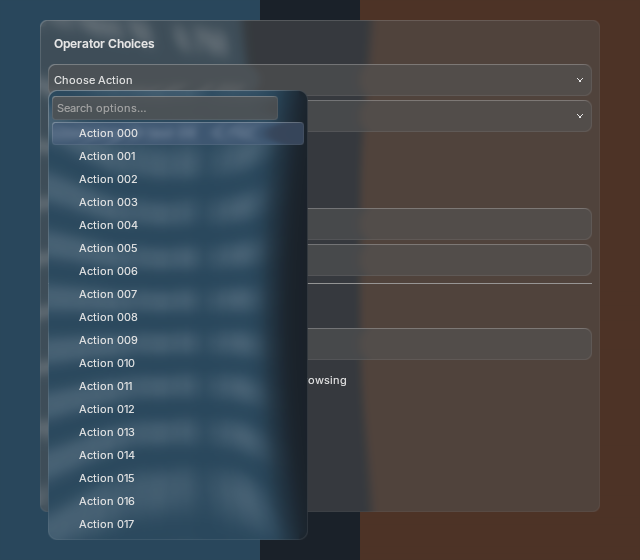
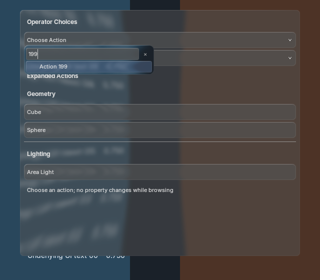
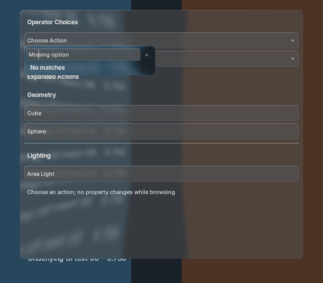
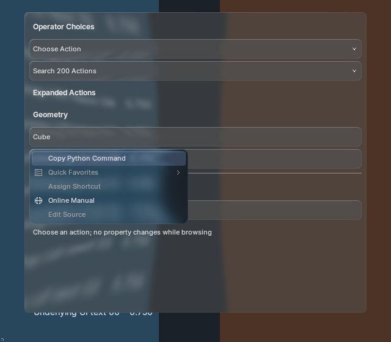
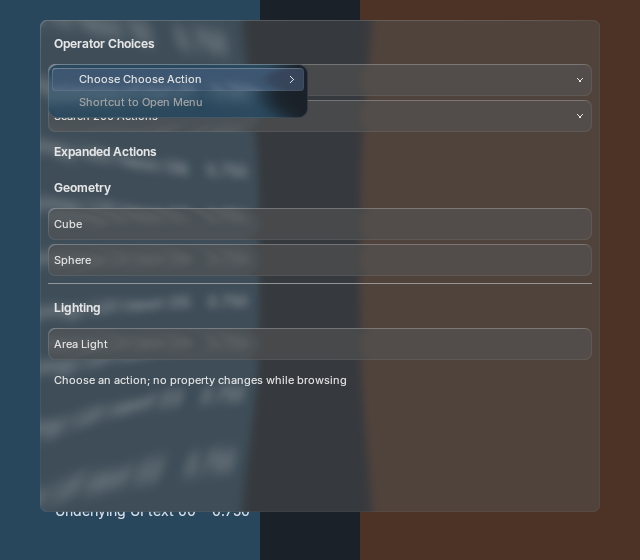
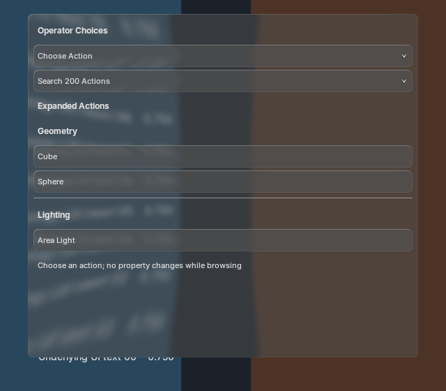
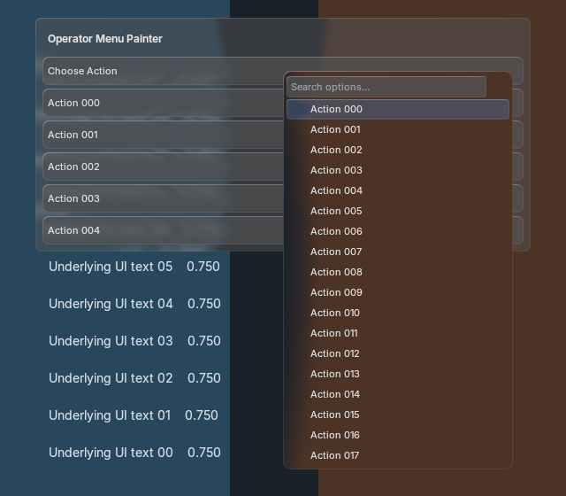

operator_enum creates expanded action buttons. operator_menu_enum opens the same searchable liquid-glass menu with operator choices. Browsing does not execute the operator; selecting supplies the exact enum identifier and configured arguments. Flags pass singleton sets.

Existing BVT buttons, arrows, fonts, theme roles, strong menu blur and shared squash/stretch are reused. No new concept artwork is substituted for implementation evidence. These recordings are ready for Tyler’s visual QA; exact reference matching is not claimed.






600 motion frames match with native text batching enabled/disabled. One backdrop production, one strong blur and five offscreens remain retained alongside font, shader, batch and layout identities. Warm paint performs no dynamic enum evaluation or temporary keyconfig creation. Long menus draw only visible rows.
Real window input searches for action 199, executes once with configured arguments, cancels without execution, activates expanded choices and opens exact operator context menus. Runtime tests cover enum flags, context pointers, dynamic numeric remaps, poll failures, removal, argument changes, invocation, static fallback and a registered host shortcut that opens the custom popup.


The same six buttons and searchable 48-action menu are rendered on both revisions. Resting and open-menu RGB pixels are unchanged on both runtimes. This is a shared-painter regression comparison; the previous revision did not implement these operator authoring methods. Pixel comparison · Before timing · After timing.
130 unit tests plus Blender runtime and window tests pass. Exact reference/motion approval, icon-only buttons and arbitrary custom icons, full native OperatorProperties introspection, broader themes/platforms and Blender 4.2 execution remain open. No native widget fallback is used.
Capture record · Runtime checks · Real input · Integration and limits · Performance and validation · Official source audit